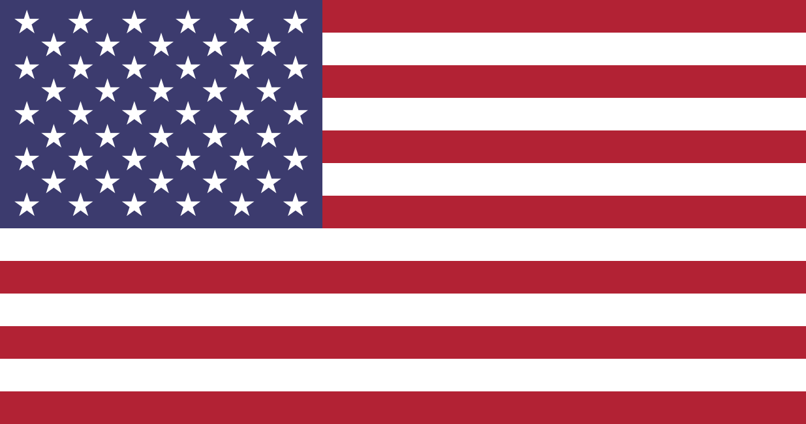
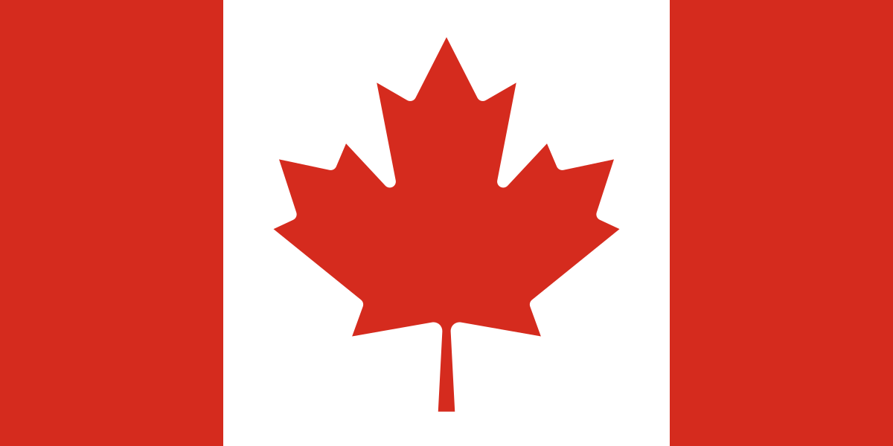
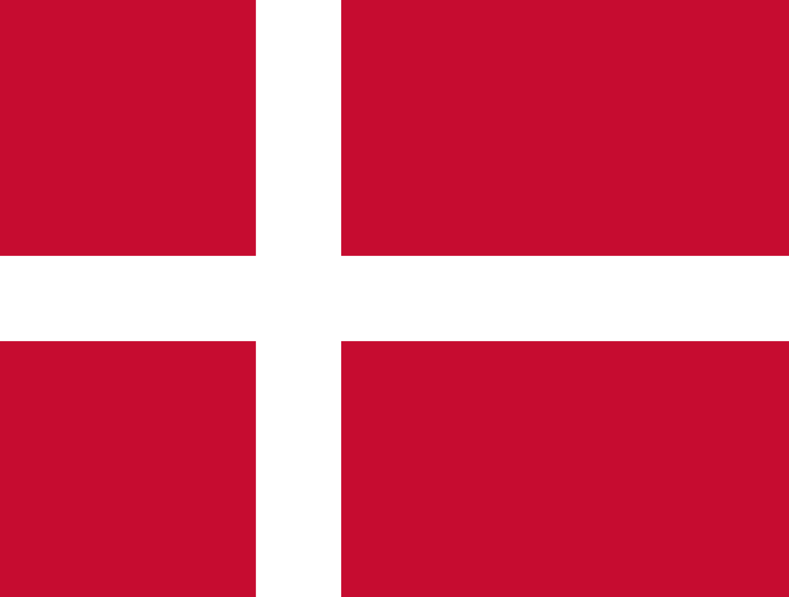
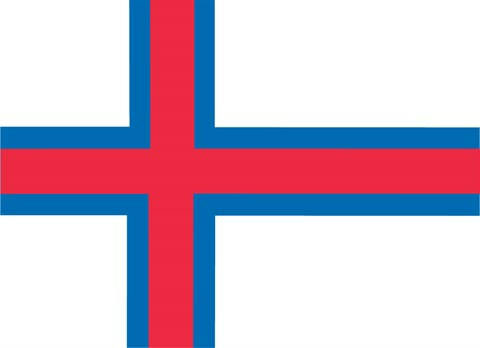

Fakta om relevante lande
Værtslande

Navn: United States of America (De forenede amerikanske stater)
Befolkning: 325,7 millioner
Hovedstad: Washington D.C.
Areal: 9,8 millioner km2
Styreform: Forbundsrepublik
Fattigdom: 12,7% (41,4 millioner)
Vigtig viden, ligegyldig info:
- Hvis man I USA til en formel middag er i tvivl om hvornår man må begynde at spise bør man vente på at den ældste ved bordet begynder at spise
- Der går 60.000 amerikanere pr. Wal-Mart i USA

Navn: Canada
Befolkning: 36,2 millioner
Hovedstad: Ottawa
Areal: 10 millioner km2
Styreform: Konstitutionelt monarki
Fattigdom: 9,8% (3,5 millioner)
Vigtig viden, ligegyldig info:
- Det største ahornsirup lager i Canada indeholder 62800 tønder ahornsirup. I de tønder er der til sammen 17.200.000 kg ahornsirup
- Der er 3.470.000 km2 skov i Canada det er 40% af Canadas samlede areal

Navn: Estados Unidos Mexicanos (De forenede mexicanske stater)
Befolkning: 127,5 millioner
Hovedstad: Mexico City
Areal: 1,9 millioner km2
Styreform: Forbundsrepublik
Fattigdom: 26,2% (33,4 millioner)
Vigtig viden, ligegyldig info:
- I Mexico er der tradition for at man på nytårsaftens kan kaste et glas vand ud på gaden for at undgå tårer og negativ energi i det nye år
- En tacos koster ca. 12 mexicanske pesos i Mexico (4 danske kroner)
Kontigentslande

Navn: Kongeriget Danmark
Befolkning: 5,7 millioner
Hovedstad: København
Areal: 43 tusind km2
Styreform: Konstitutionelt monarki
Fattigdom: 3,7% (210,9 tusinde)
Vigtig viden, ligegyldig info:
- Det danske legetøjsfirma Lego producerer hvert år 360.000.000 bildæk. Dette gør dem til verdens største bildæk producent
- I Danmark er der 5 grise pr. indbygger

Navn: Føroyar (færøerne)
Befolkning: 49 tusinde
Hovedstad: Tórshavn
Areal: 1,4 tusinde km2
Styreform: Konstitutionelt monarki
Fattigdom: 4,2% (2 tusinde)
Vigtig viden, ligegyldig info:
- De fleste huse på Færøerne har græs på taget. Dette græs bliver ikke klippet med maskine men af får
- Der er i alt tre lyskryds på Færøerne som alle ligger i Tórshavn